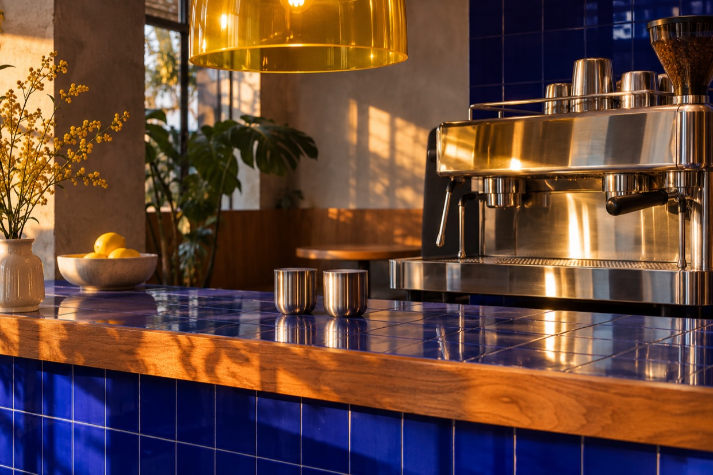

Barra de café de especialidad
Café. Sin manual.
Espresso, bebidas frías y algo dulce. Una barra para probar combinaciones fuera de lo habitual.
Carta de ejemplo
Lo que sale
de la barra.

Horario de muestra
La barra.
Azulejo azul, acero y sol de tarde. Pide un espresso o prueba la mezcla del día.
- Martes a viernes
- 08:30–17:00
- Sábado y domingo
- 09:00–16:00